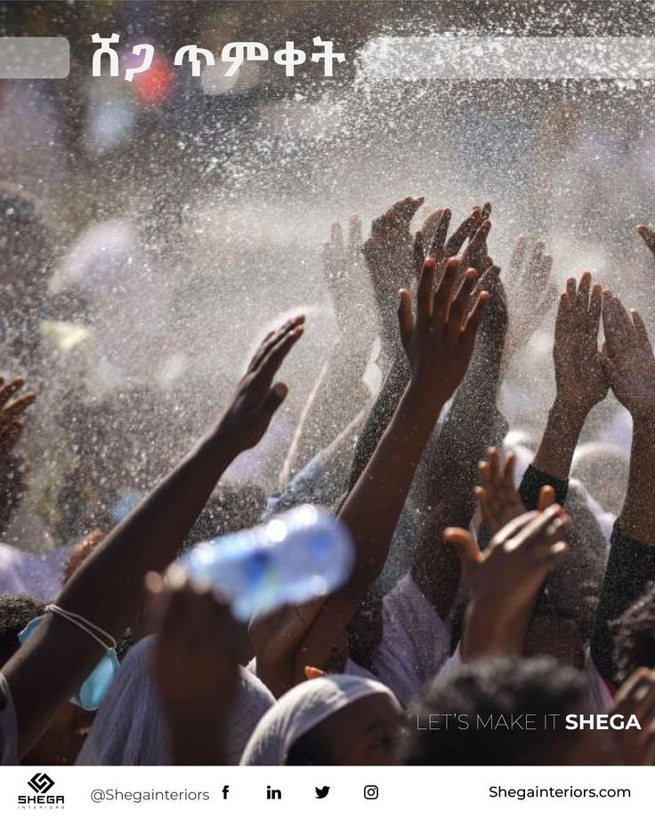

Our Calendar
Ethiopia is famous for having 13 months in a year. Because of this, our holidays happen on different dates than the rest of the world.
Here is a table of the most important days:
| Holiday | When is it? | What happens? |
|---|---|---|
| Enkutatash (New Year) |
September 11 | This is our New Year. It is the end of the rainy season and the yellow "Adey Abeba" flowers bloom. |
| Meskel (Finding of the Cross) |
September 27 | We light a huge bonfire called "Demera" in the city squares to celebrate. |
| Timket (Epiphany) |
January 19 | This is the biggest outdoor festival. Priests carry the "Tabot" (replica of the Ark) to the water. Everyone wears traditional white clothes. |
| Genna (Christmas) |
January 7 | We celebrate Christmas on this day. People play a traditional game similar to hockey called Yegenna Chewata. |